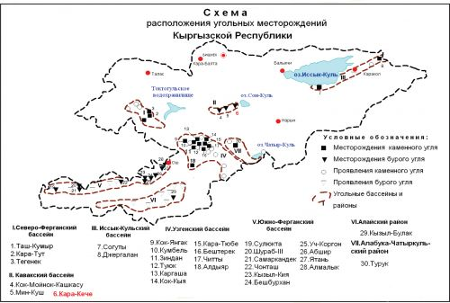

Сайтты иштеп чыгуу жана көмүр кендеринен түшкөн кирешелерди статистикалык талдоо
Кыргызстандын Көмүр Казуу Тарыхы
Кыргызстанда көмүр казуу 19-кылымдын аягында башталган. Алгачкы кендерге Нарын (1890), Көкжангак (1896), Кызылкыя (1898), Сүлүктү жана Шураб (1900) кирет. 1917-жылы бул кендерден 166 миң тонна көмүр казып алынган. 1940-жылга чейин көмүр өнөр жайы негизинен ушул кендерге негизделген.
Кыргызстандын көмүр өнөр жайы
Кыргызстанда көмүр негизги отун болуп саналат. Өлкөдө 70тен ашык көмүр кени бар, запастары 2,3 миллиард тоннаны түзөт. Негизги көмүр өндүрүү аймагы Нарын облусу. Кыргызстандын көмүрүнүн кемчилиги - механикалык бекемдигинин төмөндүгү, бул ачык ыкма менен казып алууда көп көмүр майдаланып кетишине себеп болот. Жылытуу мезгилинде жылына 2 миллион тонна көмүр керектелет.

Сүрөт 2.1. Кыргыз Республикасындагы көмүр кендерин жайгаштыруу картасы
Кыргызстанда көмүрдүн орточо баасы 5 миң сомдон бир аз жогору

×

Заключение
Создание скоростной модели литосферы,определения разрешающей способности алгоритма Сейсмотомографической инверсии